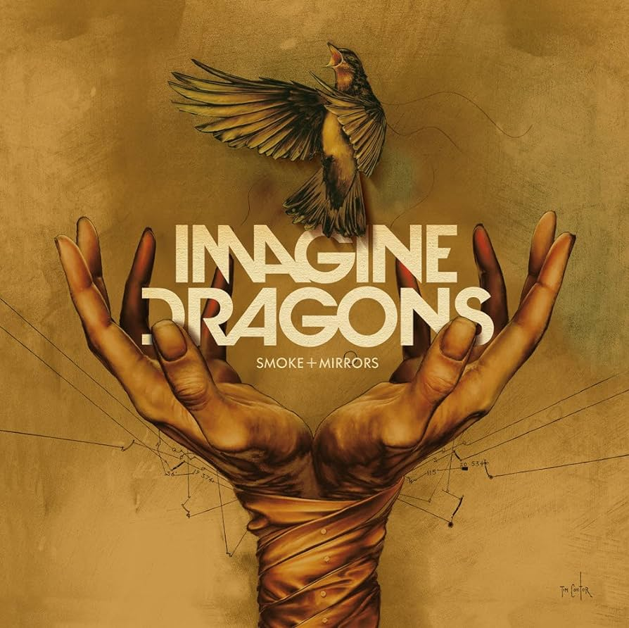
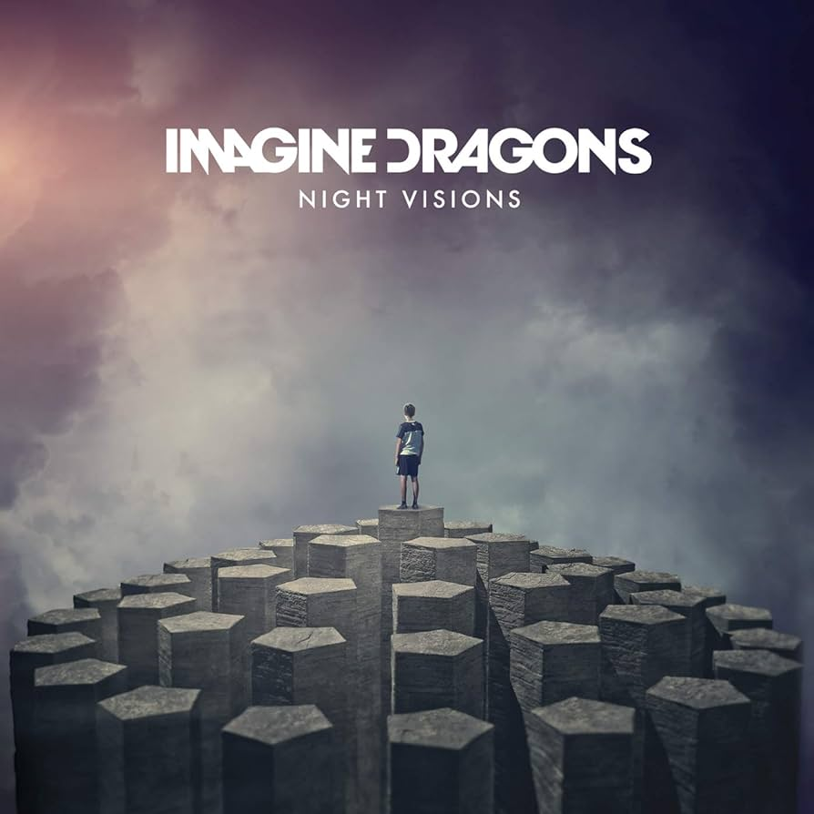

Imagine Dragons
Discografía

Mercury - Acts 1 & 2
Fecha de lanzamiento
1 julio 2022
Más reproducciones
1.400M+
Tracks
32
Duración
1h 42min

Origins
Fecha de lanzamiento
9 noviembre 2018
Más reproducciones
1.100M+
Tracks
15
Duración
52min 30s

Evolve
Fecha de lanzamiento
23 junio 2017
Más resproducciones
2.900M+
Tracks
12
Duración
43min 7s

Smoke and Mirrors
Fecha de lanzamiento
23 octubre 2015
Más resproducciones
600M+
Tracks
22
Duración
1h 23min

Night Visions
Fecha de lanzamiento
4 septiembre 2012
Más resproducciones
2.100M+
Tracks
14
Duración
55min 33s